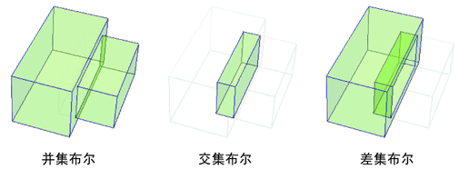

NURBS 布尔
布尔功能可以用于在一个操作中修剪多个 NURBS 曲面。布尔将提供更快的工作流程，因为其可允许您一次修剪多个曲面，同时无需分别与每个曲面相交。
Maya 中布尔操作的三种可能类型：
“并集布尔”(Union booleans)
- 组合两个或多个对象，并丢弃重叠的区域。
“交集布尔”(Intersection booleans)
- 组合两个或多个对象，并仅保持重叠的区域。
差集布尔
- 组合两个或更多对象，并从第一个对象中减去重叠区域。

相关主题
修剪 NURBS 曲面
对曲面执行布尔运算
父主题：
修剪